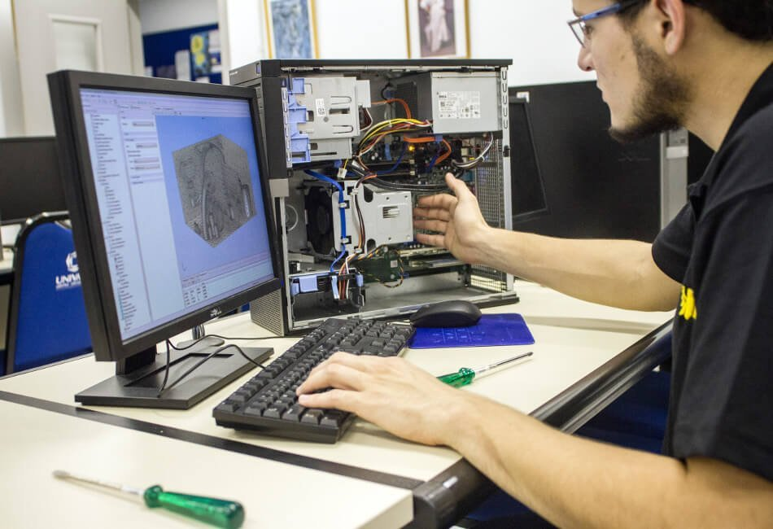
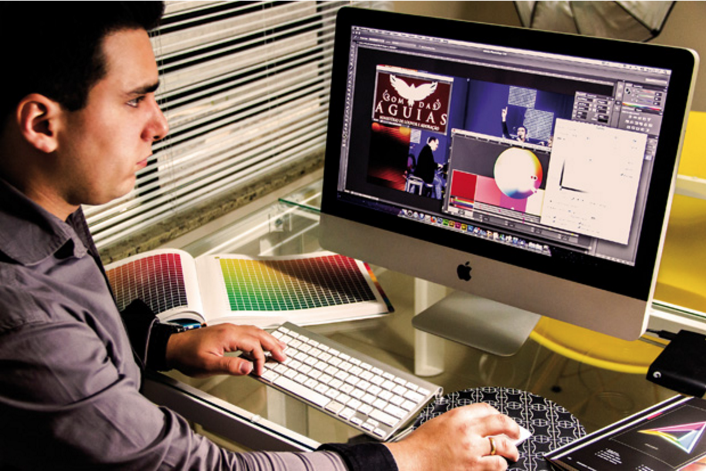

DE OLHO NO FUTURO
O mercado está aquecido para o profissional de TI!
Estudos mostram que profissionais de TI terão crescimento da demanda do mercado de até 12% até 2024,
e para responder essa demanda o mercado precisa de muitos profissionais que atendam as necessidades do mercado da Tecnologia da Informação.As carreiras de TI
estão subindo rapidamente no ranking das mais bem pagas do País e é possível encontrar profissionais com salários acima de R$ 50 mil nesta área. A busca por profissionais
é alta em companhias de médio porte, start-ups e grandes empresas. A seguir, veja algumas das áreas TI que o mercado mais emprega e procura atualmente.
Engenharia da Computação
A Engenharia da Computação é um ramo da engenharia que abrange vários campos da Ciência da Computação e da Engenharia Eletrônica.
O foco do engenheiro de computação é a criação de hardwares, sendo responsável pela produção de equipamentos computacionais
para ser usados em distintos setores, de acordo com as expectativas do mercado.
Finalmente, um dos pontos mais interessantes pelos interessados, o salário.Influenciando e muito na hora de escolher uma profissão.
No Brasil, temos a Lei 4.950/A, de 22 de abril de 1966, que dispõe sobre salário mínimo dos profissionais de Engenharia no Brasil.
- Jornada de 6 horas:6 salários mínimos;
- Jornada de 7 horas: 7,25 salários mínimos;
- Jornada de 8 horas: 8,5 salários mínimos.
Engenheiro de software
O engenheiro de softwares(Aplicativos) trabalha na criação e manutenção de softwares em empresas.
É preciso dominar linguagens de programação, processo e qualidade de software e análise de sistemas.
É preciso graduação na área para exercer esta profissão. Pós-graduação e certificações são coisas ideais diferenciais.
Os salários chegam na média de R$ 9 mil para o nível sênior.
Analista de redes
Esta é mais uma área na qual o profissional é bastante concorrido, já que há poucos profissionais disponíveis no mercado em relação à demanda. O profissional desta área é responsável por criar e implementar sistemas de redes na organização. Para se tornar um analista de redes, a graduação(especialização) mais comum é de Informática, mas domínio de matemática também é requerido.
Desenvolvedor de Bancos de Dados
O Analista ou desenvolvedor de Banco de Dados é o profissional responsável por atuar com administração de banco de dados, desenvolver melhorias, identificar e solucionar problemas. A administração dos dados de uma empresa é uma enorme responsabilidade e exige alto preparo e conhecimentotécnico. A graduação mais comum para a área é Informática, e o salário médio é de R$ 3.500.
Desenvolvedor de Jogos Digitais
Se você curte videogame e está em dúvida de qual área de TI seguir, esta é uma profissão em alta. Dentre os motivos estão o aprimoramento dos smartphones(Celulares) e as transformações digitais. Ainda há pouca oferta de profissionais na área, e a formação pode ser em curso livre, com salários de em torno de R$ 3.500, ou até graduação.